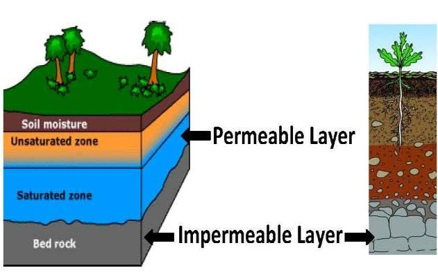
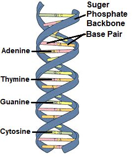

The rainwater seeps into the ground, raising the level of groundwater across the world. ―Then let man look at his Food: For that we pour forth water in abundance, and We split the land in fragments, and produce therein corn and grapes and nutritious plants, and olive and dates and enclosed gardens dense with lofty trees, and fruits and fodder; for use and convenience to you and your cattle.‖ [Al Quran 80: 26–32]
বৃষ্টির পানি মাটিতে প্রবেশ করে, সারা বিশ্বে ভূগর্ভস্থ পানির স্তর বাড়ায়। -তাহলে মানুষ তার খাদ্যের দিকে তাকাই: এর জন্য আমরা প্রচুর পরিমাণে পানি ঢেলে দিই, এবং আমরা জমিকে টুকরো টুকরো করে বিভক্ত করি, এবং তাতে ভুট্টা, আঙ্গুর এবং পুষ্টিকর উদ্ভিদ, এবং জলপাই এবং খেজুর এবং উচ্চ বৃক্ষ এবং ফল ও পশুখাদ্যের ঘনত্বে ঘেরা বাগান তৈরি করি; আপনার এবং আপনার গবাদি পশুদের ব্যবহার এবং সুবিধার জন্য।'' [আল কুরআন 80: 26-32]
The verses focus on hilly terrains, deserts, and steppes that produce crops like corn, grapes, olives, dates, and enclosed gardens (oases). Thus, the verses are not referring to the water of regular rainfall but rather to groundwater that slowly flows through the Permeable Layers, supporting plant growth in these regions. The Permeable Layer can be found worldwide at depths of up to 750 meters, at best. This layer is composed of fractured stones, gravel, and sand, as described in the verses mentioned above: ―…and We split the land in fragments...‖
শ্লোকগুলি পাহাড়ি অঞ্চল, মরুভূমি এবং স্টেপসগুলির উপর ফোকাস করে যা ভুট্টা, আঙ্গুর, জলপাই, খেজুর এবং ঘেরা বাগান (মরুদ্যান) এর মতো ফসল উত্পাদন করে। এইভাবে, আয়াতগুলি নিয়মিত বৃষ্টিপাতের জলকে নির্দেশ করছে না, বরং ভূগর্ভস্থ জলকে নির্দেশ করছে যা এই অঞ্চলে উদ্ভিদের বৃদ্ধিকে সমর্থন করে ধীরে ধীরে ভেদযোগ্য স্তরগুলির মধ্য দিয়ে প্রবাহিত হয়। সর্বোত্তমভাবে 750 মিটার পর্যন্ত গভীরতায় ভেদযোগ্য স্তরটি বিশ্বব্যাপী পাওয়া যেতে পারে। এই স্তরটি ভগ্ন পাথর, নুড়ি এবং বালির সমন্বয়ে গঠিত, যেমনটি উপরে উল্লিখিত আয়াতে বর্ণিত হয়েছে: ''…এবং আমরা জমিকে টুকরো টুকরো করে দিয়েছি...''
FIGURE 13.15: Ground Water

চিত্র 13_15 / Figure 13_15
চিত্র 13.15: ভূগর্ভস্থ জল
চিত্র 13_15 / Figure 13_15
Rainwater moves through the Permeable Layer, raising the level of groundwater across the world. The water flows due to the layered-structure and differences in ground pressure, with mountains and rainfall playing a vital role. Even when the topsoil is dry, there can be a substantial amount of groundwater stored in the Permeable Layer. The estimated total volume of this groundwater is equivalent to a 55-meter-thick layer spread out over the entire surface of the Earth.
বৃষ্টির পানি প্রবেশযোগ্য স্তরের মধ্য দিয়ে চলে, যা সারা বিশ্বে ভূগর্ভস্থ পানির স্তরকে বাড়িয়ে দেয়। স্তরযুক্ত-গঠন এবং স্থল চাপের পার্থক্যের কারণে জল প্রবাহিত হয়, পাহাড় এবং বৃষ্টিপাত একটি গুরুত্বপূর্ণ ভূমিকা পালন করে। এমনকি উপরের মৃত্তিকা শুকিয়ে গেলেও, ভেদযোগ্য স্তরে প্রচুর পরিমাণে ভূগর্ভস্থ জল সঞ্চিত হতে পারে। এই ভূগর্ভস্থ জলের আনুমানিক মোট আয়তন পৃথিবীর সমগ্র পৃষ্ঠে ছড়িয়ে থাকা 55-মিটার-পুরু স্তরের সমান।
5. Production of Flowering Trees and Fruits: ―And it is He who spread out the land, and set thereon mountains standing firm and rivers; and of the all fruits He made in it—pairs two (Double Pollination)…‖ [Part 5 of the verse is underlined] I have translated the underlined part of the verse word-for-word. Normally, it is translated in a deviated form, such as: "and fruit of every kind He made in pairs, two and two." This translation implies that there should be male apples and female apples, but no such distinction exists. Therefore, it should be understood that there is an issue with the translation. After looking into the word- for-word translation, I found that it is not about male apples and female apples. Instead, the context of the verse refers to 'pairs two' as the process of 'Double Pollination?
5. ফুলগাছ ও ফলের উৎপাদন: - এবং তিনিই ভূমিকে বিস্তৃত করেছেন এবং তাতে স্থাপন করেছেন দৃঢ়ভাবে পর্বতমালা এবং নদীসমূহ; এবং এতে তিনি যে সমস্ত ফল তৈরি করেছেন তার মধ্যে দুই জোড়া (দ্বৈত পরাগায়ন)…” [আয়াতের ৫ম খণ্ড আন্ডারলাইন করা হয়েছে] আমি আয়াতের আন্ডারলাইন করা অংশটিকে শব্দে-শব্দে অনুবাদ করেছি। সাধারণত, এটি একটি বিচ্যুত আকারে অনুবাদ করা হয়, যেমন: "এবং প্রত্যেক প্রকারের ফল তিনি জোড়ায় জোড়ায় তৈরি করেছেন, দুই এবং দুই।" এই অনুবাদটি বোঝায় যে পুরুষ আপেল এবং মহিলা আপেল হওয়া উচিত, কিন্তু এই ধরনের কোন পার্থক্য বিদ্যমান নেই। অতএব, বুঝতে হবে অনুবাদে সমস্যা আছে। শব্দ-শব্দের অনুবাদ অনুসন্ধান করার পরে, আমি খুঁজে পেয়েছি যে এটি পুরুষ আপেল এবং মহিলা আপেল সম্পর্কে নয়। পরিবর্তে, আয়াতের প্রেক্ষাপটে 'দ্বৈত পরাগায়ন' প্রক্রিয়া হিসাবে 'জোড়া দুটি' উল্লেখ করা হয়েছে?
5a. Pair (Double Helix DNA Molecule)
5 ক. পেয়ার (ডাবল হেলিক্স ডিএনএ অণু)
In the Quran, 'pair' typically refers to the 'Double Helix DNA Molecule.' Therefore, 'pairs two' should be understood as 'two groups of Double Helix DNA Molecules.' These two groups are necessary to produce fruits through the process of Double Pollination. FIGURE 13.16: Double Helix DNA Molecule

চিত্র 13_16 / Figure 13_16
কুরআনে 'জোড়া' বলতে সাধারণত 'ডাবল হেলিক্স ডিএনএ অণু'কে বোঝায়। অতএব, 'জোড়া দুই'কে বোঝা উচিত 'দ্বৈত হেলিক্স ডিএনএ অণুর দুটি দল।' ডাবল পরাগায়ন প্রক্রিয়ার মাধ্যমে ফল উৎপাদনের জন্য এই দুটি গ্রুপ প্রয়োজন। চিত্র 13.16: ডাবল হেলিক্স ডিএনএ অণু
চিত্র 13_16 / Figure 13_16
The matter is discussed below deliberately.
বিষয়টি নীচে ইচ্ছাকৃতভাবে আলোচনা করা হয়েছে।
5aI. Noble Pair
5aI. নোবেল জুটি
―Do they not look at the Earth, how many we produced in it—all from Noble Pair (Min kullay zawgin kareemin)?‖ [Al Quran 26:7]
"তারা কি পৃথিবীর দিকে তাকায় না, আমরা তাতে কত উৎপাদন করেছি - সবই নোবেল পেয়ার (মিন কুল্লে জাওগিন কারিমিন) থেকে?" [আল কুরআন 26:7]
―…And He scattered through it beasts of all kinds—We send down rain from the sky—all from Noble Pair (Min kullay zawgin kareem)‖ [Al Quran 31:10]
"...আর তিনি এর মাধ্যমে ছড়িয়ে দিয়েছেন সব ধরনের জন্তু-আমরা আকাশ থেকে বৃষ্টি বর্ষণ করি-সমস্ত নোবেল পেয়ার থেকে (মিন কুল্লে জাওগিন করিম)" [আল কুরআন 31:10]
[In a straightforward translation, these verses do not convey any meaning to someone unfamiliar with DNA. As a result, translators often deviate from the original wording, translating 'pair' as 'sexual couple.' My translations of these verses are direct, word-for-word] The Double Helix DNA Molecules are the only Pairs in the world with which the beasts of all kinds can be created. It is the blue print of life. All living creatures are created from the DNA Double Helix Molecule. A gene is a segment of a Double Helix DNA Molecule that codes for a specific function. About 23,000 genes have been discovered in the human DNA Molecule. However, it accounts for only 2 percent of the DNA. The function of rest 98 percent is not clear and known as Junk DNA. Genes are the basic units of genetics, with each gene coding for a specific protein. For example, one gene codes for insulin, which helps the body regulate sugar levels. With only 20 types of amino acids available in a cell, a Double Helix DNA molecule can produce over 1,000 types of proteins needed for the body. It can also produce more than 2,000 types of enzymes. The DNA replicates cells to form, grow, and repair the body, making them the true Noble Pairs. A human child is born with more than a hundred trillion cells. Can we truly grasp that the entire process of creation is guided by the codes in just 23 pairs of Double Helix DNA Molecules, found in the cell's nucleus, invisible to the naked eye? This mechanism performs an incredible job. However, in light of the Quran, divine guidance by Allah is essential for the formation of a perfect human body. The Double Helix DNA Molecule is indeed the handiwork of Allah Himself:
[একটি সরল অনুবাদে, এই আয়াতগুলি ডিএনএ-র সাথে অপরিচিত কাউকে কোনও অর্থ প্রকাশ করে না। ফলস্বরূপ, অনুবাদকরা প্রায়শই মূল শব্দ থেকে বিচ্যুত হন, 'জোড়া'কে 'যৌন দম্পতি' হিসাবে অনুবাদ করেন। আমার এই আয়াতগুলির অনুবাদগুলি সরাসরি, শব্দের জন্য-শব্দের জন্য] ডাবল হেলিক্স ডিএনএ অণুগুলি বিশ্বের একমাত্র জোড়া যা দিয়ে সমস্ত ধরণের প্রাণী তৈরি করা যায়। এটি জীবনের নীল ছাপ। সমস্ত জীবন্ত প্রাণী DNA ডাবল হেলিক্স অণু থেকে সৃষ্ট। একটি জিন হল একটি ডাবল হেলিক্স ডিএনএ অণুর একটি অংশ যা একটি নির্দিষ্ট ফাংশনের জন্য কোড করে। মানুষের ডিএনএ অণুতে প্রায় 23,000 জিন আবিষ্কৃত হয়েছে। তবে এটি ডিএনএর মাত্র 2 শতাংশের জন্য দায়ী। বাকি ৯৮ শতাংশের কার্যকারিতা স্পষ্ট নয় এবং জাঙ্ক ডিএনএ নামে পরিচিত। জিন হল জেনেটিক্সের মৌলিক একক, প্রতিটি জিন একটি নির্দিষ্ট প্রোটিনের জন্য কোডিং করে। উদাহরণস্বরূপ, একটি জিন ইনসুলিনের জন্য কোড করে, যা শরীরকে চিনির মাত্রা নিয়ন্ত্রণ করতে সাহায্য করে। একটি কোষে মাত্র 20 ধরনের অ্যামিনো অ্যাসিড পাওয়া যায়, একটি ডাবল হেলিক্স ডিএনএ অণু শরীরের জন্য প্রয়োজনীয় 1,000 ধরনের প্রোটিন তৈরি করতে পারে। এটি 2,000 টিরও বেশি ধরণের এনজাইম তৈরি করতে পারে। ডিএনএ কোষের প্রতিলিপি করে দেহ গঠন, বৃদ্ধি এবং মেরামত করে, তাদের সত্যিকারের নোবেল পেয়ার করে। একটি মানব শিশু একশ ট্রিলিয়ন কোষ নিয়ে জন্মায়। আমরা কি সত্যিই বুঝতে পারি যে সৃষ্টির পুরো প্রক্রিয়াটি কেবলমাত্র 23 জোড়া ডাবল হেলিক্স ডিএনএ অণুর কোড দ্বারা পরিচালিত হয়, কোষের নিউক্লিয়াসে পাওয়া যায়, খালি চোখে অদৃশ্য? এই প্রক্রিয়াটি একটি অবিশ্বাস্য কাজ করে। যাইহোক, কুরআনের আলোকে, একটি পরিপূর্ণ মানবদেহ গঠনের জন্য আল্লাহর ঐশী নির্দেশনা অপরিহার্য। ডাবল হেলিক্স ডিএনএ অণু প্রকৃতপক্ষে স্বয়ং আল্লাহর হাতের কাজ:
―So set thou thy face steadily and truly to the Faith: God's handiwork, according to the pattern on which He has made mankind, no change in the work by God: that is the standard law: but most among mankind understand not.‖ [Al Quran 30:30]
"সুতরাং আপনি অবিচলিতভাবে এবং সত্যই বিশ্বাসের দিকে আপনার মুখ রাখুন: ঈশ্বরের হস্তকর্ম, যে নমুনা অনুসারে তিনি মানবজাতিকে তৈরি করেছেন, ঈশ্বরের কাজের মধ্যে কোন পরিবর্তন নেই: এটি আদর্শ আইন: কিন্তু মানুষের মধ্যে অধিকাংশই বোঝে না।" [আল কুরআন 30:30]
5aII. Attractive Pair
5aII. আকর্ষণীয় জুটি
In DNA replication, the double helix gets unwound, and its strands get separated. A strand acts as a template for the next strand. Bases are matched to synthesize the new partner strand. The old strand attracts the new strand to produce new Double Helix DNA Molecule. So, in the Quran, the Double Helix DNA Molecule is also referred to as 'Attractive Pairs' (zawgin baheej):
ডিএনএ প্রতিলিপিতে, ডাবল হেলিক্স ক্ষতবিক্ষত হয়ে যায় এবং এর স্ট্র্যান্ডগুলি আলাদা হয়ে যায়। একটি স্ট্র্যান্ড পরবর্তী স্ট্র্যান্ডের জন্য একটি টেমপ্লেট হিসাবে কাজ করে। নতুন অংশীদার স্ট্র্যান্ড সংশ্লেষিত করার জন্য ভিত্তিগুলি মিলেছে৷ পুরানো স্ট্র্যান্ড নতুন স্ট্র্যান্ডকে আকর্ষণ করে নতুন ডাবল হেলিক্স ডিএনএ অণু তৈরি করে। সুতরাং, কুরআনে, ডাবল হেলিক্স ডিএনএ অণুকে 'আকর্ষণীয় জোড়া' (জাওগিন বাহিজ) হিসাবেও উল্লেখ করা হয়েছে:
―And the earth, We have spread it out and set thereon mountains standing firm and grown therein every kind from Attractive Pair (zawgin baheej)‖ [Al Quran 50:7]
"এবং পৃথিবী, আমি একে বিস্তৃত করেছি এবং তাতে স্থাপন করেছি পর্বতমালা দৃঢ় এবং তাতে উৎপন্ন করেছি আকর্ষণীয় জোড়া (জাওগিন বাহিজ)।" [আল কুরআন ৫০:৭]
FIGURE 13.17: DNA Replication (Zawgin Baheej) The strands are attracted to each other by weak hydrogen bonds, making them Attractive Pairs of an esteemed standard. These weak hydrogen bonds also allow for smooth segregation. A human body develops from a single cell (the zygote). The DNA Double Helix Molecules replicate and divide the cells, with their codes dictating which cells will become bone cells, muscle cells, brain cells, and so on. They do not create nerve cells in hair or hair cells in nerves. Over 250 types of cells make up the human body, and each type has a specific structure and the necessary programs to function properly. In 2012, the scientists of Leicester University printed the whole of the human genome (a genome is an organism's complete set of DNA, including all of its genes) to show just how much information it takes to make up one human body—the 130 book volumes would take up to 95 years to read. And it is only a small percentage of information. The depth of a cell is unfathomable.

চিত্র 13_17 / Figure 13_17
চিত্র 13.17: ডিএনএ রেপ্লিকেশন (জাউগিন বাহিজ) দুর্বল হাইড্রোজেন বন্ড দ্বারা স্ট্র্যান্ডগুলি একে অপরের প্রতি আকৃষ্ট হয়, যা তাদের একটি সম্মানিত মানের আকর্ষণীয় জোড়ায় পরিণত করে। এই দুর্বল হাইড্রোজেন বন্ডগুলি মসৃণ পৃথকীকরণের জন্যও অনুমতি দেয়। একটি মানবদেহ একটি একক কোষ (জাইগোট) থেকে বিকশিত হয়। ডিএনএ ডাবল হেলিক্স অণুগুলি কোষগুলিকে প্রতিলিপি করে এবং বিভক্ত করে, তাদের কোডগুলি নির্দেশ করে যে কোন কোষগুলি হাড়ের কোষ, পেশী কোষ, মস্তিষ্কের কোষ ইত্যাদিতে পরিণত হবে। তারা চুলে স্নায়ু কোষ বা স্নায়ুতে চুলের কোষ তৈরি করে না। 250 টিরও বেশি ধরণের কোষ মানবদেহ তৈরি করে এবং প্রতিটি ধরণের একটি নির্দিষ্ট কাঠামো এবং সঠিকভাবে কাজ করার জন্য প্রয়োজনীয় প্রোগ্রাম রয়েছে। 2012 সালে, লিসেস্টার ইউনিভার্সিটির বিজ্ঞানীরা সমগ্র মানব জিনোম (একটি জিনোম হল একটি জীবের ডিএনএর সম্পূর্ণ সেট, এর সমস্ত জিন সহ) মুদ্রণ করে দেখানোর জন্য যে একটি মানবদেহ তৈরি করতে কতটা তথ্য লাগে — 130টি বইয়ের ভলিউম পড়তে 95 বছর পর্যন্ত সময় লাগবে৷ এবং এটি তথ্যের একটি ছোট শতাংশ মাত্র। একটি কোষের গভীরতা অকল্পনীয়।
চিত্র 13_17 / Figure 13_17
5aIII. Plants and Animals are from the same Pairs
5aIII. উদ্ভিদ এবং প্রাণী একই জোড়া থেকে এসেছে
The following verse discusses 'ships' and 'cattle,' stating that both are created from 'Pairs:
নিচের আয়াতে 'জাহাজ' এবং 'গবাদি পশু' নিয়ে আলোচনা করা হয়েছে, যেখানে বলা হয়েছে যে উভয়ই 'জোড়া' থেকে সৃষ্টি হয়েছে:
"That has created pairs in all things, and has made for you ships and cattle on which ye ride‖ [Al Quran 43:12] The only 'Pairs' that can create the wood for an ocean- going ship or a horse for riding are Double Helix DNA Molecules. Chemically, the genome of a plant and the genome of an animal are the same, but their codes differ, which causes one cell to develop into a plant and another into a horse. Thus, the term 'Pair' often refers to the 'Double Helix DNA Molecule' in the Quran.
"এটি সমস্ত কিছুতে জোড়া সৃষ্টি করেছে, এবং তোমাদের জন্য জাহাজ ও গবাদিপশু তৈরি করেছে যেগুলিতে তোমরা চড়ো" [আল কুরআন 43:12] একমাত্র 'জোড়া' যা সমুদ্রগামী জাহাজ বা ঘোড়ায় চড়ার জন্য কাঠ তৈরি করতে পারে তা হল ডাবল হেলিক্স ডিএনএ অণু। রাসায়নিকভাবে, একটি উদ্ভিদের জিনোম এবং প্রাণীর কোড যা একই রকমের কারণ। একটি কোষ একটি উদ্ভিদ এবং অন্য একটি ঘোড়ায় বিকশিত হয় তাই, 'জোড়া' শব্দটি প্রায়শই কুরআনে 'ডাবল হেলিক্স ডিএনএ অণু'কে নির্দেশ করে।
5aIV. All from the Pairs
5aIV। জোড়া থেকে সব
All living creatures, from single-celled amoebas to humans, are created from Double Helix DNA Molecules (Pairs):
এককোষী অ্যামিবা থেকে শুরু করে মানুষ পর্যন্ত সমস্ত জীবন্ত প্রাণী ডাবল হেলিক্স ডিএনএ অণু (জোড়া) থেকে তৈরি হয়েছে:
―Glory to God Who created all things that the earth produces as well as their own kind and things of which they have no knowledge from the Pairs (DNA Double Helix)‖ [Al Quran 36:36]
"আল্লাহর মহিমা যিনি পৃথিবী থেকে যা কিছু উৎপন্ন করে, সেইসাথে তাদের নিজস্ব প্রকারের এবং যুগল থেকে তাদের কোন জ্ঞান নেই এমন সমস্ত কিছু সৃষ্টি করেছেন (ডিএনএ ডাবল হেলিক্স)" [আল কুরআন 36:36]
However, a virus does not contain a double helix in its DNA. This distinction is clarified in the verse by the words, ―all things that the earth produces...from the Pairs.‖ A virus does not reproduce in the earth; it replicates only within a host. Therefore, a virus, lacking Double Helix DNA, cannot disprove the verse. Moreover, a virus is considered nonliving. Virus genomes do not encode all the proteins and RNAs necessary for replication. The membrane of a virus fuses with the membrane of the host cell, allowing viral proteins to mix directly with the host cell's proteins in the cytoplasm, where replication can occur. Thus, viruses can survive outside of their hosts for some time, but they require a host cell to replicate.
যাইহোক, একটি ভাইরাস এর ডিএনএতে একটি ডাবল হেলিক্স থাকে না। এই পার্থক্যটি আয়াতে এই কথার দ্বারা স্পষ্ট করা হয়েছে, "পৃথিবী যা কিছু উৎপন্ন করে...জোড়া থেকে।" একটি ভাইরাস পৃথিবীতে পুনরুত্পাদন করে না; এটি শুধুমাত্র একটি হোস্টের মধ্যে প্রতিলিপি করে। অতএব, একটি ভাইরাস, ডাবল হেলিক্স ডিএনএ-র অভাব, আয়াতটিকে মিথ্যা প্রমাণ করতে পারে না। তদুপরি, একটি ভাইরাসকে নির্জীব হিসাবে বিবেচনা করা হয়। ভাইরাস জিনোমগুলি প্রতিলিপির জন্য প্রয়োজনীয় সমস্ত প্রোটিন এবং আরএনএ এনকোড করে না। একটি ভাইরাসের ঝিল্লি হোস্ট কোষের ঝিল্লির সাথে ফিউজ করে, ভাইরাল প্রোটিনগুলিকে সরাসরি সাইটোপ্লাজমে হোস্ট কোষের প্রোটিনের সাথে মিশে যেতে দেয়, যেখানে প্রতিলিপি ঘটতে পারে। এইভাবে, ভাইরাসগুলি তাদের হোস্টের বাইরে কিছু সময়ের জন্য বেঁচে থাকতে পারে, তবে তাদের প্রতিলিপি করার জন্য একটি হোস্ট সেল প্রয়োজন।
5aV. Reproductive Pairs
5aV। প্রজনন জোড়া